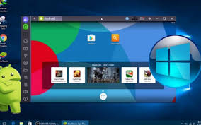
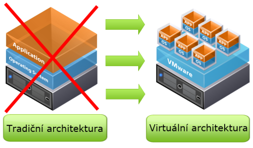
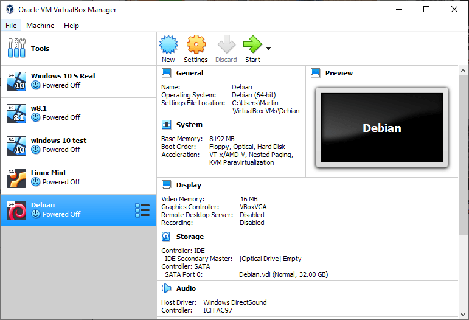

Emulátor
Program, který umožňuje běh počítačových programů na jiné platformě, než pro kterou byly původně vytvořeny a kterou samy od sebe podporují. Typickým příkladem emulátoru je program umožňující běh videoher známých z herních konzol na běžném PC pod MS Windows nebo Linuxem. Jiným příkladem může být emulátor DOSBox, který emuluje starý operační systém MS DOS v prostředí novějších Windows, případně i na zcela odlišných platformách.

Virtualizace
Postupy virtualizace a techniky, které umožňují v počítači přistupovat k dostupným zdrojům jiným způsobem, než jakým fyzicky existují. Virtualizaci je možné realizovat na různých úrovních - od celého počítače, po jeho jednotlivé hardwarové komponenty, až po konkrétní softwarové prostředí.

Virtuální stroj
Speciální software, který dokáže simulovat skutečný počítač a umožňuje instalaci OS i dalších programů. Podmínkou virtualizace je výkonný počítač a potřebný software – např. Virtual PC, VirtualBox, VMWare apod.

Virtuální stroje
Používají se z bezpečnostních důvodů pro běh některých aplikací, aby tyto nemohly ohrozit hostitelský počítač a jeho operační systém. Často jsou využívány i pro testování nových aplikací. Velmi přínosná je virtualizace na úrovni serverů - tzv. konsolidace serverů nabízí dokonalejší využití hardware, oddělený běh síťových aplikací i vyšší bezpečnost dat.